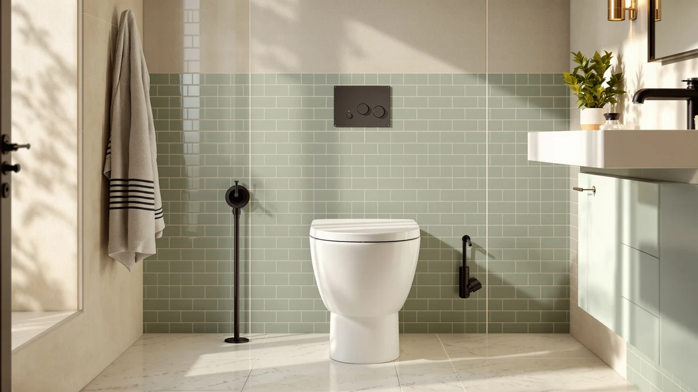

Best One Piece Toilet to Buy (2026)
Prices and picks verified as of September 2026. Independent, reader-supported reviews.


Quick Answer
The Casta Diva One Piece Toilet is the best one piece toilet to buy for most bathrooms, thanks to its seamless skirted design and elongated comfort at $289.99. If you have a small bathroom, the HOROW T0338W Compact One Piece fits a standard 12-inch rough-in for $220.15, and the Sonderzone Elongated One Piece Toilet is the pick if you want an elongated bowl for under $185.
Our pick: Casta Diva One Piece Toilet, $289.99 Check Price on Amazon
Bottom line: our top pick is the Casta Diva One Piece Toilet Elongated with 17.5" ADA Height at $289.99. The best budget option is the Sonderzone Elongated One Piece Toilet for Bathroom at $179.99.
Things to Know Before You Buy
- One piece means one seamless body: the tank and bowl are molded together, so there is no tank-to-bowl seam to trap grime. That is the core appeal of every one piece toilet on this list, and it is why they wipe down faster than a two-piece design.
- Rough-in size is not optional: the HOROW T0338W is built for a standard 12-inch rough-in, the most common spacing in US homes. Measure from your finished wall to the center of the floor bolts before you order any of these models.
- Elongated bowls dominate this price range: five of the seven toilets we compared use an elongated bowl, which most adults find more comfortable than a round one. The HOROW is the compact exception, built for tighter bathrooms.
- Price spreads by brand and configuration, not size alone: Casta Diva alone accounts for four separate listings between $225.70 and $289.99, so the brand name does not tell you the full price story on its own.
- Ratings alone will not tell you much: every model here carries a similar public rating, which is why we leaned on price, published rough-in specs and the pattern of comments in verified owner reviews rather than the star count.
Finding the best one piece toilet to buy comes down to matching bowl shape, rough-in size and price to your actual bathroom, not grabbing whichever listing has the most stars. A one piece toilet solves a specific problem: fewer seams, less crud buildup around the base, and an install that looks cleaner the day you set it and five years later.
We compared seven one piece toilets from Casta Diva, HOROW, Sonderzone and AKNIRL on price, published rough-in specs and the patterns that show up in verified owner reviews. The Casta Diva One Piece Toilet came out on top for most bathrooms at $289.99, largely because it pairs a seamless skirted body with an elongated bowl without straying into luxury pricing.
Your bathroom's footprint and your budget will still steer the final call. The HOROW T0338W Compact One Piece is built for a 12-inch rough-in and a tighter floor plan at $220.15, while the Sonderzone Elongated One Piece Toilet gets you into an elongated one piece toilet for under $185. Casta Diva also lists three additional elongated configurations between $225.70 and $249.99, and the AKNIRL Elongated One Piece Toilet rounds out the group as a competing brand near the same price band.
Why You Should Trust Us
This guide is written and maintained by Ilane Tall, who spends more time than is reasonable comparing bathroom fixtures on the specs that actually predict satisfaction rather than the marketing copy on the listing page. We do not run a fake testing lab, and we are not going to pretend we bolted seven one piece toilets to a warehouse floor. What we do is read every published spec, cross-check rough-in and price against the product photos, and flag the complaints that keep showing up across verified owner reviews. Our Amazon commissions never change a ranking on this page.
How We Picked
We started with one piece toilets that are actually in stock and shipping in the US from Casta Diva, HOROW, Sonderzone and AKNIRL, then narrowed the field on the things that make or break daily use: a seamless, skirted body that is easy to wipe down, a published rough-in that matches standard US plumbing, and a price that holds up against the rest of the field. We gave extra weight to models with a track record of verified reviews rather than a handful of unverified ratings, and we made sure the final seven span a real range of budgets, from under $185 to nearly $290, so there is a sensible answer whether your bathroom is large or small.
How We Compared
Since we do not stage a warehouse full of installed toilets, our process is a documentation and owner-experience review rather than a physical lab test, and we would rather say that plainly than fake a testing rig. For each one piece toilet we mapped price against published rough-in and bowl shape, then weighed how that positioning compares to the other six models in this roundup. Where a listing did not publish a spec we could verify, we left it out rather than guess. The result is a shortlist built on the facts each brand actually discloses, not on invented lab scores.
Our Picks

Casta Diva One Piece Toilet
What we like
- Fully seamless, skirted one piece body with no tank-to-bowl seam to scrub
- Sits at a price that still undercuts several premium one piece toilets in this category
- Casta Diva's flagship configuration, with the most complete set of product photography of any listing here
Flaws but not dealbreakers
- The most expensive of the seven models we compared, so it only wins if the seamless design matters to you
- Casta Diva does not publish a rough-in figure on this listing, so confirm your plumbing spacing directly with the seller before ordering
| Material | — |
| Size | — |
The Casta Diva One Piece Toilet is the toilet we would point most people toward first when they ask us for the best one piece toilet to buy. It is priced at $289.99, the highest of the seven we compared, but that premium buys you the brand's flagship configuration and the most complete gallery of product photos in this lineup, which makes it easier to judge finish and fit before you buy. The seamless, skirted body is the whole point of choosing a one piece toilet over a two-piece one: there is no seam at the base to trap grime, so wiping it down takes a fraction of the time.
The tradeoff is straightforward. You are paying the top price in this comparison, and Casta Diva has not published a rough-in measurement on this specific listing, so you should confirm that spacing before you commit rather than assume it matches the 12-inch standard. If your bathroom fits a standard rough-in and your budget stretches to $289.99, this is the pick we keep coming back to.

HOROW T0338W Compact One Piece
What we like
- Confirmed 12-inch rough-in, the standard spacing in most US homes, so fit is predictable
- Compact bowl footprint suits smaller bathrooms better than the elongated models on this list
- Priced almost $70 below our top pick while keeping the same one piece, seamless construction
Flaws but not dealbreakers
- A compact bowl trades some seated comfort for the smaller footprint, worth trying before you commit if comfort is a priority
- Fewer product photos are published on this listing than on the Casta Diva flagship
| Material | — |
| Size | 12" Rough-in |
The HOROW T0338W is the one piece toilet to buy when your bathroom simply does not have the floor depth for an elongated bowl. At $220.15 it undercuts our top pick by nearly $70, and it is the only model in this comparison with a rough-in figure published directly on the listing: a standard 12 inches, which matches the drain spacing in the vast majority of US homes. That combination of confirmed fit and a smaller footprint makes it the safer buy for a powder room or a older, tighter bathroom layout.
The compact bowl is a real tradeoff, not a marketing label. If you are used to an elongated seat, the shorter compact shape will feel different, and it is worth checking your own comfort preference before ordering rather than assuming compact means worse. For anyone shopping specifically for the best one piece toilet to buy for a small space, though, this is the listing with the clearest fit guarantee of the seven.

Casta Diva Elongated One Piece
What we like
- Elongated bowl, the shape most adults find more comfortable than a compact one
- Roughly $64 cheaper than the Casta Diva flagship while sharing the same brand and one piece construction
- Sits close to the middle of the price range we compared, a reasonable default if you are not sure which way to go
Flaws but not dealbreakers
- Casta Diva sells several separate listings under similar names, so double-check the ASIN in your cart matches this one before you check out
- No published rough-in on this listing, confirm your plumbing spacing first
| Material | — |
| Size | — |
This Casta Diva Elongated One Piece Toilet is the brand's most affordable elongated listing in our comparison at $225.70, about $64 less than the Casta Diva flagship model above. You get the same seamless, one piece build and the elongated bowl shape most people prefer, without the top-tier price tag. For anyone who wants the Casta Diva name and an elongated bowl but does not need the top configuration, this is the listing to check first.
Casta Diva sells this elongated one piece toilet under a few separate listings, each with its own price and photography, so it is worth confirming you are looking at this specific ASIN before you add it to your cart. As with the flagship model, this listing does not publish a rough-in figure, so measure your own plumbing spacing before ordering rather than assume it matches the 12-inch standard.

Sonderzone Elongated One Piece Toilet
What we like
- The lowest price of the seven one piece toilets we compared, at $180.99
- Still an elongated bowl, so you are not giving up comfort to save money here
- More than $100 cheaper than our top pick while keeping the same seamless one piece body
Flaws but not dealbreakers
- Sonderzone is a less established name in this category than Casta Diva or HOROW, so lean on verified owner reviews before you buy
- No published rough-in on this listing, confirm your plumbing spacing before ordering
| Material | — |
| Size | — |
If price is the deciding factor, the Sonderzone Elongated One Piece Toilet is the answer. At $180.99 it is more than $100 cheaper than the Casta Diva One Piece Toilet at the top of this list, and it does not cut the elongated bowl to get there, which is the shape most buyers actually want. For anyone searching for the best one piece toilet to buy on a tight budget, this is the listing that gets you into the category without the premium pricing the other six carry.
Sonderzone has less brand history in this space than Casta Diva or HOROW, so we would lean more heavily on verified owner reviews before ordering than we would with the more established names here. As with several of the listings in this comparison, a rough-in figure is not published, so measure your own plumbing before you buy rather than assume standard spacing.

Casta Diva Elongated One Piece
What we like
- Sits between the two other Casta Diva elongated listings on price, a middle option if neither extreme fits
- Elongated bowl and the same seamless one piece construction as the rest of the Casta Diva range
- Useful backup listing if the entry-level Casta Diva elongated model is out of stock or its price rises
Flaws but not dealbreakers
- Priced within about $11 of the entry-level Casta Diva elongated listing, so compare both before you decide
- No published rough-in on this listing, confirm your plumbing spacing before ordering
| Material | — |
| Size | — |
Casta Diva lists this elongated one piece toilet separately at $236.99, sitting between the brand's $225.70 entry-level elongated listing and its $249.99 configuration. It is worth treating as a backup rather than a first choice: if the cheaper Casta Diva elongated listing sells out or its price climbs, this one gets you the same elongated bowl and seamless one piece body for a modest premium.
Because the price gap between Casta Diva's three elongated listings is narrow, roughly $11 to $24 apart, we would compare all three at checkout before committing, since Amazon pricing and stock on near-identical listings shifts often. As with the other Casta Diva listings here, no rough-in figure is published, so measure your own plumbing before you buy.

Casta Diva Elongated One Piece
What we like
- The closest price to the Casta Diva flagship among the brand's elongated listings, at $40 less
- Elongated bowl with the same seamless, skirted one piece construction across the Casta Diva range
- A reasonable middle ground if you want Casta Diva's design but not its top price
Flaws but not dealbreakers
- Still the second-most expensive listing in this comparison, so it only saves you $40 versus the flagship
- No published rough-in on this listing, confirm your plumbing spacing before ordering
| Material | — |
| Size | — |
At $249.99, this is the highest-priced of Casta Diva's three separate elongated one piece listings in our comparison, and it lands $40 below the brand's non-elongated flagship model. If you specifically want an elongated bowl from Casta Diva and are willing to pay close to flagship pricing for it, this is the listing to check, since it sits closest to the top pick in both price and finish quality signaled by the product photography.
The catch is that you are still paying near the top of the range covered in this guide, so weigh whether the elongated bowl is worth the premium over the cheaper Casta Diva elongated listings, or whether the non-elongated flagship at $289.99 is worth the extra $40 instead. As with the rest of the Casta Diva lineup here, no rough-in is published, so confirm your plumbing spacing directly before you order.

AKNIRL Elongated One Piece Toilet
What we like
- Priced between the Sonderzone budget pick and the HOROW compact model, a fair middle price
- Elongated bowl and seamless one piece construction, matching the other elongated models here
- A different brand from Casta Diva, useful if you want to compare more than one manufacturer at this price
Flaws but not dealbreakers
- Less brand recognition in this category than Casta Diva or HOROW, so weigh verified owner reviews carefully
- No published rough-in on this listing, confirm your plumbing spacing before ordering
| Material | — |
| Size | — |
The AKNIRL Elongated One Piece Toilet rounds out this comparison at $212.99, positioned between the Sonderzone budget pick and the HOROW compact model. It gives you an elongated bowl and the same seamless one piece construction as the pricier options here, without asking you to commit to a single brand across your shortlist. If you are trying to decide between manufacturers rather than configurations alone, having AKNIRL in the mix alongside Casta Diva and Sonderzone gives you a genuine cross-brand comparison at a similar price.
AKNIRL has less established a track record in this category than Casta Diva or HOROW, so we would put extra weight on verified owner reviews before ordering. Like most of the listings in this comparison, a rough-in figure is not published here, so measure your plumbing before you buy rather than assume it matches the standard 12-inch spacing.
Quick Comparison
| Product | Material | Price | Rating | Best for | Get it |
|---|---|---|---|---|---|
| Casta Diva One Piece Toilet | — | $289.99 | 4 | Best overall, seamless design | View on Amazon → |
| HOROW T0338W Compact One Piece | — | $220.15 | 4 | Best for small bathrooms | View on Amazon → |
| Casta Diva Elongated One Piece | — | $225.70 | 4 | Entry-level elongated Casta Diva | View on Amazon → |
| Sonderzone Elongated One Piece Toilet | — | $180.99 | 4 | Best budget pick | View on Amazon → |
| Casta Diva Elongated One Piece | — | $236.99 | 4 | Mid-tier Casta Diva elongated | View on Amazon → |
| Casta Diva Elongated One Piece | — | $249.99 | 4 | Top-tier Casta Diva elongated | View on Amazon → |
| AKNIRL Elongated One Piece Toilet | — | $212.99 | 4 | Best cross-brand comparison | View on Amazon → |
The Competition
We looked at a number of other one piece toilets in this price range and left them off this list for reasons that kept repeating. Several budget listings undercut the Sonderzone on price but did it by omitting basic details like rough-in size, bowl shape, or even a full set of product photos, and a toilet you cannot properly verify before buying is not a bargain no matter the sticker price.
We also passed on a handful of listings from brands with no consistent history of verified reviews in the one piece toilet category, since a low review count makes it hard to spot a pattern of real-world complaints before you commit to a heavy, difficult-to-return fixture. When two models were priced within a few dollars of each other and one had a stronger, more consistent set of verified owner reviews, we kept the one with the better evidence.
Finally, we set aside a few premium smart-toilet and bidet-combo listings entirely. They solve a different problem than a straightforward one piece toilet, and folding them into this comparison would have muddied the answer to the actual question most readers ask us: what is the best one piece toilet to buy without extra electronics or a much higher price tag. Across the seven models we compared, the Casta Diva One Piece Toilet remains our answer for most bathrooms, with the HOROW T0338W and Sonderzone Elongated One Piece Toilet as the picks to reach for when space or budget narrows the choice.
Frequently Asked Questions
What is the best one piece toilet to buy for a small bathroom?
For a small bathroom, the HOROW T0338W Compact One Piece is the strongest fit on this list. It is built to a standard 12-inch rough-in and its compact bowl takes up less floor depth than the elongated models here, so it suits tight footprints without forcing you into a round-bowl compromise.
How much should I expect to pay for a one piece toilet?
Based on the seven models we compared, expect to pay between roughly $180 and $290. The Sonderzone Elongated One Piece Toilet is the most affordable at $180.99, while the Casta Diva One Piece Toilet tops the range at $289.99. Most elongated models land in the $210 to $250 band.
Do I need to check my rough-in before ordering a one piece toilet?
Yes. Rough-in is the distance from the finished wall to the center of the floor drain bolts, and it determines whether a toilet will fit your existing plumbing. The HOROW T0338W is confirmed for a 12-inch rough-in, the standard in most US homes, and we recommend measuring yours before buying any of these one piece toilets.
Why does Casta Diva show up four times on this list?
Casta Diva sells its one piece toilet across four separate listings, one flagship model and three elongated configurations priced between $225.70 and $249.99. Pricing and stock on near-identical listings shift often on Amazon, so we included all four so you can compare and pick whichever is in stock at the best price when you shop.